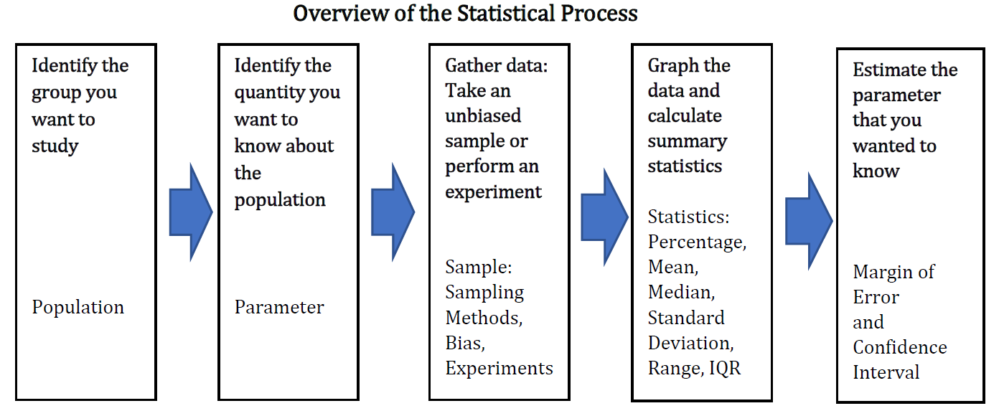
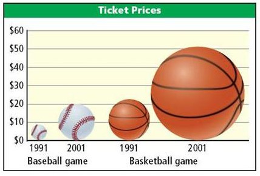
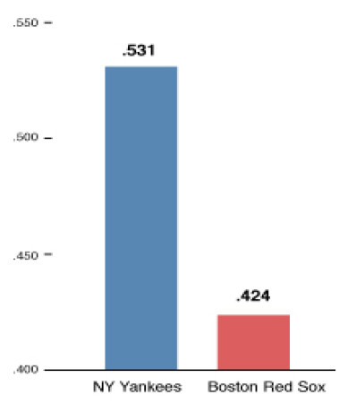

Section 4.3 Worksheets Statistical Process and Describing Data
Worksheet 4.3.1 In Class Activity for Section 4.1 and Section 4.2

Identify the Population, Sample, Parameter and Statistic.
For each scenario, a question or problem has been identified. Draw a diagram and describe the population, sample, parameter and statistic. Be specific with units for the parameter and statistic.
1.
A US insurance company wants to know whether households have two cars. A survey of 976 US households found that 32% of households have two cars.2.
A local toy store owner wants to know how much money kids in northern Indiana aged 5-12 get as an allowance per week. They asked 100 kids from around northern Indiana and found the average allowance to be $4.25 per week.Sampling Methods.
3.
Identify the sampling method used:All the Warsaw High School students were assembled in the gym, and then separated into groups by grade. Each student was assigned a number, and 25 numbers were randomly drawn from the students in each grade. They were asked if they planned to go to college.
4.
Identify the sampling method used:You are standing outside of the grocery store and stop every third person leaving to ask if they purchased milk.
5.
Identify the sampling method used:At his book club meeting, Dan asked each member if they had seen the movie made from their current book.
6.
Identify the sampling method used:Instead of the method in exercise 3, the administrator at Warsaw High School chose 100 student numbers randomly and asked those students to report to the office for the survey.
7.
You are a statistical consultant and you have been hired to collect data on employee satisfaction. The company has 1000 employees at two buildings, East and West. There are 4 departments and 5 levels of employees. Identify the population, sample, parameter and statistic, then describe a sampling method.Type of Study.
For each of the following, identify whether the study is observational or an experiment. If it is observational, identify the controls if they exist, and identify the cases. If it is an experiment, identify the control group, the treatment group, and the blinding if it exists.
8.
Over a 6-month period, among 100 people with bipolar disorder, patients given a high dose of omega-3 fats improved more than those given a placebo. Patients didn’t know which they were given, but the experimenters knew.9.
A National Cancer Institute study of 716 melanoma patients and 1014 cancer-free patients found that those having a single large mole had twice the risk of melanoma.10.
1000 people were randomly separated into two groups—one group was assigned to exercise for 45 minutes daily, and the other group was instructed not to exercise. The participants in the exercise group reported falling asleep within 15 minutes of going to bed, but those not exercising laid awake for at least 30 minutes.11.
500 patients with migraine headaches receive a shot to see if it helps reduce the frequency of the headaches. The nurses giving the shots write down the code on each syringe and the patient name. The syringes look identical, but half contain the new medicine and half contain saline.Confidence Intervals.
12.
The table below lists results for a Gallup poll conducted via random telephone interviews in October 2015. Assume that the margin of error is 4 percentage points. Find the confidence interval for each category.| American adults | 18-34 years old | 35-49 years old | 50-64 years old | 65+ years old | |
| Support Legalizing the use of Marijuana | 58% | 71% | 64% | 58% | 35% |
| Confidence Interval |
13.
Which age group(s) can you claim that over half of the people support legalization of marijuana? Explain.14.
For which age group(s) can you claim that the majority of people do not support legalization of marijuana? Explain.15.
Explain why the percentage for all American adults isn’t exactly the average of all the categories.16.
Go to college-students-say-campus-climate-deters-speech.aspx 38 or see the printed handout in class. Give the percentage, margin of error and confidence interval. What do you think about the survey methods used?Types of Bias.
In each situation, identify a potential source of bias. You will use each type from the class prep once.
17.
Trident gum did a survey of dentists to see how many would recommend their gum.18.
A boss asks their employees if they have taken drugs in the last week.19.
A researcher on a phone survey asks, “Do you plan to vote for the school district bond or would you rather see our schools crumble?”20.
A survey was given to a random sample of students but more than half of the students didn’t return the survey.21.
A survey about Grace College student’s experiences in MAT-1185 was given to students at in the class, but students who commute never received the survey.22.
A survey asks people for their weight.23.
A broadcast email was sent to all Grace College students with a satisfaction survey.Describing Data: Types of Data.
Please complete the anonymous survey online. The link is in Moodle. This will give our class some data to work with.
24.
For each question in the survey, determine whether the data is qualitative or quantitative.Frequency Tables and Graphs of Qualitative Data.
25.
For one of the sets of qualitative data, make a frequency table using a spreadsheet. Use your table to make a pie chart and a bar chart. Write a sentence or two about any patterns or observations you make from the graph.26.
For the credit hour data, make a histogram. Write a sentence or two about any patterns or observations you make from the graph. Label and title your graph.Bad plots.
What is wrong with these graphs?
27.
Ticket Prices
28.
Percentage of Victories
https://news.gallup.com/poll/229085/college-students-say-campus-climate-deters-speech.aspx